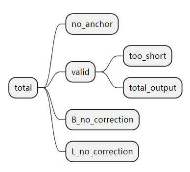

scFAST分析| 03.fast模块
原文：https://mp.weixin.qq.com/s?__biz=MzAwMzIzOTk5OQ==&mid=2247504044&idx=1&sn=d37991280217dcc29280efa344f856bb&chksm=9b3ca9fcac4b20eab124ccd4ba6ad3f5eee640df314e7d8fec0225035f06178e3a51dbe2033f#rd 合集：单细胞教程全收录
fast模块

本节视频教程可见B站(文末阅读原文可直接跳转)：
https://www.bilibili.com/video/BV1F94y1879j?p=3
scFAST学习手册 可扫码领取

3.1 rna模块说明
3.1.1 算法及流程说明
当前教程基于seeksoultools 1.0 版本制作
seeksoul tools 软件由寻因生物公司 负责开发和维护，更新版本的seeksoul tools 软件见http://seeksoul.seekgene.com/
rna模块：用于识别细胞标签barcode，比对定量，得到可用于下游分析的细胞表达矩阵，之后进行细胞聚类和差异分析，该模块不仅支持SeekOne系列试剂盒产出数据，还可通过对barcode的描述，支持多种自定义设计结构。
- Step1: barcode/umi提取 seeksoultools可以根据不同的R1结构设计和每种结构的不同的参数对barcode/umi提取和处理，对R1以及对应的R2进行过滤，生成新的R2文件。
结构描述，以下的两种R1结构为例： MM: B8L8B8L10B8U8（错位设计)
DDV2: B17U12
B表示barcode部分碱基；
L表示linker部分碱基；
U表示umi部分碱基；
X表示任意碱基，用于占位；
字母后数字表示碱基长度。
错位设计的Anchor定位
有些设计下，为了使测序reads碱基多样性，加入了1-4bp的移码碱基，即anchor；anchor决定了barcode的起始位置。seeksoultools尝试在R1序列前7个碱基中寻找Anchor序列，若没找到anchor序列，此条read以及对应的R2被认为是无效read。
Barcode和Linker矫正
Barcode序列有一定几率发生测序错误的情况，在提供有白名单的情况下，seeksoultools可以实现barcode矫正功能。当barcode存在于白名单中时，我们认为它是有效的barcode，统计有效barcode对应的reads数量。当barcode不存在于白名单中时，我们认为它是无效的barcode。在开启矫正功能时，当无效barcode一个碱基错配（一个hamming distance）的序列存在于白名单中，我们会进行以下几种处理：
只有唯一一个序列存在于白名单中：我们将这个无效barcode矫正为白名单中barcode。
有多个序列存在于白名单中，且有至少一个序列的read支持数 大于0 ：
如果只有一个序列的read支持数大于0，我们将这个 无效barcode 改为这个序列且保留这条read。如果有多个序列的read 支持数大于0，我们将这个无效barcode 改为read支持数量最多的序列。其余情况：这条read以及对应的R2为 无效 read。
Linker的处理与Barcode相同。
接头和PolyA序列剪切 在转录组产品中，Read2的末端有可能会出现polyA tail或建库时引入的接头序列。这些序列并没有有效信息。为了节省计算时间和复杂度，我们要这些序列进行切除。剪切完的read2长度需要大于设定的最小长度来保证有足够的信息，准确比对到基因组的位置。如果剪切完成后的read2长度小于最小长度，我们认为这条read为无效read。
指标统计

total: 总共的reads数目
valid: 不需要矫正和矫正成功的reads数目
B_corrected: 矫正成功的reads数目
B_no_correction: 错误Barcode的reads数目
L_no_correction: 错误Linker的reads数目
no_anchor：不包含anchor的reads数目
trimmed: 进行过剪切的reads数目
too_short: 进行过剪切后长度小于60bp的reads数目
指标之间的关系如下： total = valid + no_anchor + B_no_correction + L_no_correction 输出fastq的reads数：total_output = valid - too_short
- Step2: 进行比对并找到比对基因
序列比对
使用
STAR比对软件将处理后的R2比对到参考基因组上。使用qualimap软件和转录本注释文件GTF，统计reads比对外显子、内含子和基因间区等的比例。使用featuresCounts将比对上的read注释到基因上，可以选择不同的注释规则，如链方向性和定量的feature。当使用外显子定量时，当read超过50%碱基比对到外显子区域时，认为该read来源于此外显子以及外显子对应的基因；当使用转录本定量时，当read超过50%碱基比对到转录本区域时，认为该read来源于此转录本以及转录本对应的基因。
指标统计
Hide
Reads Mapped to Genome: 能比对到参考基因组上的reads占所有reads的比例（包括只有一个比对位置和多个比对位置的reads）
Reads Mapped Confidently to Genome: 在参考基因组上只有一个比对位置的reads占所有reads的比例
Reads Mapped to Intergenic Regions：比对到基因间隔区reads占所有reads的比例
Reads Mapped to Intronic Regions：比对到内含子reads占所有reads的比例
Reads Mapped to Exonic Regions：比对到外显子reads占所有reads的比例
- Step3: 定量
UMI 定量
为了得到每个
barcode下基因的表达数据，seeksoultools以barcode为单位提取featureCounts输出的bam数据，统计注释到基因的umi和umi对应的reads数：
过滤掉对应UMI为单个重复碱基的reads， 例如UMI为TTTTTTTT 过滤掉注释到多个基因的reads
UMI矫正
UMI序列也有一定概率出现测序错误的情况。seeksoultools会尝试对UMI进行矫正。当同一个barcode中的某一个特定基因对应有两个UMI序列只有一个碱基错配时（一个hamming distance），reads支持数低的UMI将被纠正为reads支持数高的UMI。
细胞判定
在一个细胞群中，我们认为细胞和细胞的mRNA的含量不会相差太多。如果一个barcode对应的mRNA的含量很低，我们认为这个barcode的磁珠并没有捕获细胞，mRNA来源于背景。 seeksoultools 会以上面的规则，进行barcode是否为细胞的判定。有以下几个步骤：
对所有barcode按照对应的UMI数由高到低排序；取预估细胞的1%位置的barcode的UMI数除以10为阈值； barcode的UMI数大于阈值的判定为细胞； barocde的UMI小于阈值，但大于300时，使用DropletUtils分析。DropletUtils方法先假设UMI数量低于100的barcode为empty droplet，然后根据每个droplet相同基因的UMI数总和为背景RNA表达谱中该基因UMI数目，进而得到基因UMI数目的期望值。再通过将每个barcode的UMI数进行统计学检验，显著差异的为细胞；不符合上述条件的为背景。
指标统计
Estimated Number of Cells：判定的细胞总数
Fraction Reads in Cells: 判定为细胞的reads占所有参与定量的reads的比例
Mean Reads per Cell: 细胞的平均reads数，总reads数/判定的细胞数
Median Genes per Cell: 判定为细胞的barcode对应genes的中位数
Median UMI Counts per Cell: 判定为细胞的barcode对应UMI的中位数
Total Genes Detected: 所有细胞检测到基因数量
Sequencing Saturation: 饱和度，1 - UMI总数/reads总数
- Step4: 后续分析 得到表达矩阵后，我们可以进行下一步的分析。
Seurat分析流程 使用Seurat计算线粒体含量，细胞中UMI总数，细胞中基因总数。之后对矩阵进行归一化、寻找高变基因、降维聚类之后寻找差异基因。当然，我们也会在下面的教程中给大家详解Seurat运行过程。
3.2 fast模块说明
fast模块的参数、结果以及算法绝大部分与rna模块一致，有如下几点区别 1、fast针对全序列数据，保留了reads1去除barcodeUMI等部分后的数据，进行双端比对，并基于此结果后续进行分析 2、fast中增加了一些全序列数据特有指标：（1）核糖体含量 （2）以及数据biotype占比饼图: （3）genebody图及ACTB覆盖度；（4）lnc基因数量
3.3 fast模块使用
3.3.1 rna模块参数
rna模块中的大部分参数在fast模块中同样适用，因此需要先掌握此部分内容：
-
--fq1 R1 fastq数据路径。
-
--fq2 R2 fastq数据路径。
-
--samplename 样本名称，会在outdir目录下创建以样本名称命名的目录。仅支持数字，字母和下划线。
-
--outdir 结果输出目录。默认值：./。
-
--genomeDir
STAR构建的参考基因组路径, 版本需要与seeksoultools使用的STAR一致。 -
--gtf 相应物种的gtf路径。
-
--core 分析使用的线程数。
-
--chemistry 试剂类型，每种对应一组
--shift、--pattern、--structure、--barcode和--sc5p的组合，可选值：DDV1，DDV2，DD5V1，MM，MM-D，DD-Q；DDV1对应DD平台3’转录组V1版本试剂；DDV2对应DD平台3‘转录组V2版本试剂；DD5V1对应DD平台5‘转录组V1版本试剂；MM对应MM平台3’转录组数据；MM-D对应MM大孔径；DD-Q对应DD全序列。 -
--shift 使用移码设计。
-
--pattern 移码设计设计中用于锚定起始的碱基。
-
--structure ⽤于描述
read1的接头结构，B表示cellbarcode，L表示linker，U表示UMI，后⾯数字表示碱基⻓度，⽐如B9L12B9L13B9U8；如果是P3CBGB类的结构，只有barcode和UMI，没有linker，structure参数就是B17U12。 -
--barcode
barcode文件路径。 -
--linker
linker文件路径。 -
--skip_misB
barcode不允许碱基错配，默认允许一个碱基错配。 -
--skip_misL
linker不允许碱基错配，默认允许一个碱基错配。 -
--skip_multi 舍弃能纠错为多个白名单
barocde的reads，默认纠错为比例最高的barcode。 -
--sc5p 不启用时，分析5’转录组；启用时，分析5’转录组需。
-
--expectNum 预估的捕获细胞数目。
-
--forceCell 当正常分析得到的细胞数⽬不理想时，选⽤此参数，后⾯加⼀个预期的数值
N，seeksoultools软件会按照UMI从⾼到低取前N个细胞。 -
--include-introns 不启用时，只会选择
exon reads⽤于定量；启用时，intron reads也会⽤于定量。 -
--star_path 指定其他版本的
STAR路径进行比对，版本需要与--genomeDir版本兼容，默认的--star_path为环境下的STAR。
3.3.2 fast模块使用实战
(1)fastp指控原始fastq数据
我们采用trim的方式截去测序数据的测序接头和低质量片段，从而高效地利用测序数据，后续分析都基于clean data。在进行原始数据Trimming时我们使用 fastp软件（ Chen S，et al. 2018），处理具体如下：①截去低质量reads，使用滑动窗口的方式，4个碱基为一个窗口，若该窗口的平均碱基质量值低于10，则从该处截去reads， 参数选择：–cut_front, –cut_front_window_size 4, –cut_front_mean_quality 10；②截去 reads 尾部质量低于3或者含N（N 表示无法确定碱基信息）的 reads，参数选择: –cut_tail, –cut_tail_window_size 1, –cut_tail_mean_quality；③截去接头序列（–detect_adapter_for_pe ）；④经上述处理后，过滤掉短于 60 bp的 reads，及其paired reads。 -l or --length_required 60 双端测序需要加上： --detect_adapter_for_pe
fastp -i cellline_test/cellline_R1_001.fastq.gz -I cellline_test/cellline_R2_001.fastq.gz \
-o cellline_test/cellline_R1_001.clean.fastq.gz -O cellline_test/cellline_R2_001.clean.fastq.gz \
--cut_front –-cut_front_window_size 4 --cut_front_mean_quality 10 \
--cut_tail –-cut_tail_window_size 1 –-cut_tail_mean_quality \
--length_required 60 --detect_adapter_for_pe
# 运行提示：
# Detecting adapter sequence for read1...
# No adapter detected for read1
#
# Detecting adapter sequence for read2...
# >Illumina TruSeq Adapter Read 2
# AGATCGGAAGAGCGTCGTGTAGGGAAAGAGTGT
#
# Read1 before filtering:
# total reads: 18714992
# total bases: 2807248800
# Q20 bases: 2751519892(98.0148%)
# Q30 bases: 2642338596(94.1256%)
#
# Read2 before filtering:
# total reads: 18714992
# total bases: 2807248800
# Q20 bases: 2693483677(95.9475%)
# Q30 bases: 2530358229(90.1366%)
#
# Read1 after filtering:
# total reads: 18471287
# total bases: 2760865206
# Q20 bases: 2708982515(98.1208%)
# Q30 bases: 2602928318(94.2794%)
#
# Read2 after filtering:
# total reads: 18471287
# total bases: 2759509560
# Q20 bases: 2667685071(96.6724%)
# Q30 bases: 2511042682(90.996%)
#
# Filtering result:
# reads passed filter: 36942574
# reads failed due to low quality: 454502
# reads failed due to too many N: 222
# reads failed due to too short: 32686
# reads with adapter trimmed: 1054560
# bases trimmed due to adapters: 18837617
#
# Duplication rate: 14.048%
#
# Insert size peak (evaluated by paired-end reads): 224
#
# JSON report: fastp.json
# HTML report: fastp.html
#
# fastp -i cellline_test/cellline_R1_001.fastq.gz -I cellline_test/cellline_R2_001.fastq.gz -o cellline_test/cellline_R1_001.clean.fastq.gz -O cellline_test/cellline_R2_001.clean.fastq.gz --cut_front –-cut_front_window_size 4 --cut_front_mean_quality 10 --cut_tail –-cut_tail_window_size 1 –-cut_tail_mean_quality --length_required 60 --detect_adapter_for_pe
# fastp v0.23.4, time used: 157 seconds
(2)fast模块
seeksoultools fast run \
--fq1 /home/biomamba/analysis/xunyin/test_data/cellline_test/cellline_R1_001.clean.fastq.gz \
--fq2 /home/biomamba/analysis/xunyin/test_data/cellline_test/cellline_R2_001.clean.fastq.gz \
--samplename cellline \
--outdir /home/biomamba/analysis/xunyin/cellline_out \
--genomeDir /home/biomamba/analysis/xunyin/seek_ref/GRCh38/star \
--gtf /home/biomamba/analysis/xunyin/seek_ref/GRCh38/genes/genes.gtf \
--include_introns \
--rRNAgenomeDir /home/biomamba/analysis/xunyin/seek_ref/hg38_rRNA/star \
--rRNAgtf /home/biomamba/analysis/xunyin/seek_ref/hg38_rRNA/genes/delete_rRNA5.8-18-28_in_rRNA45s.gtf \
--core 8
输出目录下包含以下文件： /home/biomamba/analysis/xunyin/cellline_out ├── cellline_report.html ├── cellline_summary.csv ├── cellline_summary.json ├── step1 │ ├── cellline_1.fq.gz │ ├── cellline_2.fq.gz │ ├── cellline.cutTSO_1.fq.gz │ ├── cellline.cutTSO_2.fq.gz │ └── cellline_stat.fq.gz ├── step2 │ ├── featureCounts │ │ ├── cellline_SortedByCoordinate.bam.featureCounts.bam │ │ ├── cellline_SortedByName.bam │ │ ├── counts.txt │ │ └── counts.txt.summary │ └── STAR │ ├── cellline_Aligned.out.bam │ ├── cellline_Log.final.out │ ├── cellline_Log.out │ ├── cellline_Log.progress.out │ ├── cellline_SJ.out.tab │ ├── cellline_SortedByCoordinate.bam │ ├── cellline_SortedByCoordinate.bam.bai │ ├── cellline_SortedByName.bam │ ├── downbam │ │ ├── cellline.down.0.1.bam │ │ ├── cellline.down.0.1.bam.bai │ │ ├── cellline.geneBodyCoverage.curves.pdf │ │ ├── cellline.geneBodyCoverage.r │ │ └── cellline.geneBodyCoverage.txt │ ├── report.pdf │ ├── rnaseq_qc_results.txt │ └── rRNA │ ├── cellline_Aligned.out.bam │ ├── cellline_Log.final.out │ ├── cellline_Log.out │ ├── cellline_Log.progress.out │ ├── cellline_SJ.out.tab │ ├── cellline_SortedByName.bam │ ├── cellline.xls │ ├── counts.txt │ ├── counts.txt.summary │ ├── test.input.1.fq.gz │ └── test.input.2.fq.gz ├── step3 │ ├── counts.xls │ ├── detail.xls │ ├── filtered_feature_bc_matrix │ │ ├── barcodes.tsv.gz │ │ ├── features.tsv.gz │ │ └── matrix.mtx.gz │ ├── filtered_feature_bc_matrix_ │ │ ├── barcodes.tsv.gz │ │ ├── features.tsv.gz │ │ └── matrix.mtx.gz │ ├── fragment.xls │ ├── raw_feature_bc_matrix │ │ ├── barcodes.tsv.gz │ │ ├── features.tsv.gz │ │ └── matrix.mtx.gz │ └── umi.xls └── step4 ├── biotype_FindAllMarkers.xls ├── cellline.rds ├── FeatureScatter.png ├── FindAllMarkers.xls ├── lncgene_FindAllMarkers.xls ├── mito_quantile.xls ├── nCount_quantile.xls ├── nFeature_quantile.xls ├── resolution.xls ├── top10_heatmap.png ├── tsne.png ├── tsne_umi.png ├── tsne_umi.xls ├── umap.png └── VlnPlot.png
11 directories, 66 files
学习手册

与以往的教程一样，我们给大家准备了数据分析的学习手册，目前分为scFAST绪论、准备工作、fast模块、Seurat分析与可视化、mut模块等五节内容(更多章节持续创作中)及对应测试文件，大家可以添加企业微信回复关键字"scFAST学习手册 "即领: